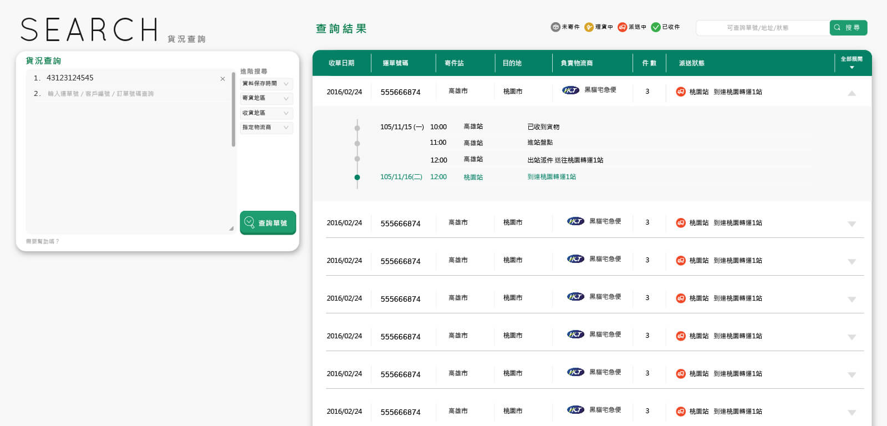

網站目標
提供快速上手的介面和流程，希望使用者在網站下訂運單獲得良好的服務體驗，往後有長期物流需求時成為簽約合作客戶。
設計過程
-
有相似服務的國外網站流程
-
比較各家物流公司的填寫需求欄位
-
各家物流公司的線上下單介面流程
-
境內和跨境物流實體流程
資料收集
-
logo設計
-
網站風格規劃
介面風格設計
-
使用介面流程
-
使用介面需求功能
-
未來UX優化功能
介面設計
主要流程 - 下訂運單
Flow Chart
1. 首頁

以重點色按鈕將視覺焦點帶到搜尋方案，引導使用者查看方案價格
2. 方案比較
會依照使用者輸入資料篩選出方案並由程式自動計算參考總價，使用者要在此頁選出最適合自己的物流方案
3. 註冊會員
只要手機驗證就可以成功註冊，直接前往下一頁填寫資料
4. 填寫資料
以使用者選擇的物流方案會顯示出不同的填寫欄位，以不同的顏色提示填寫狀態
5. 下單成功/貨況查詢
引導使用者將運單貼好將貨物交給物流公司，可由單號查詢貨況。
介面風格設計
RWD設計
風格目標
沈穩樸素
信任感
中性
台灣意象
物流意象
主題配色
背景色
樸素
背景輔色
沈穩
主題色
物流、中性、台灣
重點色
標誌、狀態